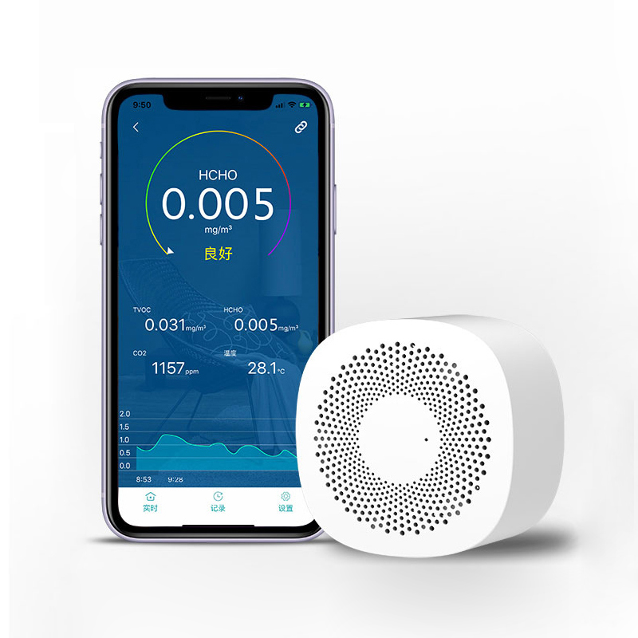

WP6003 Air Box Reader
VSON WP6003 Bluetooth APP Air Quality Detector for PM Formaldehyde TVOC

Read data:
Enable notifications
Read sensor data
Send command
Auto refresh values (30s)
Sensor calibration:
Before sensor calibration procedure please follow these instructions:
Take the device to a place with fresh air (such as balcony, outdoor);
Keep the device runnin for more than 10 minutes; then take it indoor
Calibrate
Console:
Links:
Official website
Official app
Based on code
zu2/wp6003
Use chrome developers tools for connection issues
chrome://bluetooth-internals/#devices/